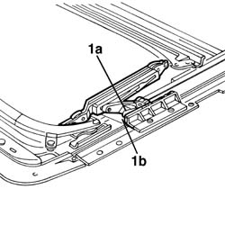

7030B54 sun roof systems
- Path
- Procedures > 70 FITTINGS > 7030 SUN ROOF AND HOOD > 7030B sliding roof > 7030B54 sun roof systems
- Kind
- repair procedure (removal / refitting; the operation number is the code)
- Applies to
- all engines; all production periods
- Interactive page
- https://sloeber94.github.io/elrnDB-a156/en/#/3238767
Applies to: all engines; all production periods
7030B18 sliding roof glass - r+r
7040E40 modular front courtesy light - r r
7030B70 sun-roof control switch - r+r
1. Working on both guides,place maanually the slides (1a) to the antirior endrun (1b) (open position).

Topics linked from this page (3)
- 7030B18 sliding roof glass - r+r
- 7030B70 sun-roof control switch - r+r
- 7040E40 modular front courtesy light - r r